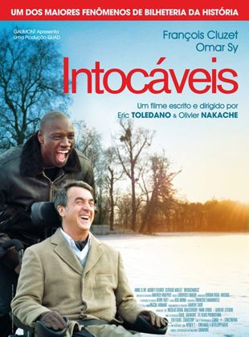

Sucessos de Bilheteria
Um Sonho de Liberdade

Andy Dufresne é condenado a duas prisões perpétuas consecutivas pelas mortes de sua esposa e de seu amante. Porém, só Andy sabe que ele não cometeu os crimes. No presídio, durante dezenove anos, ele faz amizade com Red, sofre as brutalidades da vida na cadeia, se adapta, ajuda os carcereiros, entre outras coisas.
Clique Aqui Para Assistir (YouTube)Clique Aqui Para Assistir (HBO Max)
Saiba Mais
Sucessos de Bilheteria
Forrest Gump

Mesmo com o raciocínio lento, Forrest Gump nunca se sentiu desfavorecido. Graças ao apoio da mãe, ele teve uma vida normal. Seja no campo de futebol como um astro do esporte, lutando no Vietnã ou como capitão de um barco de pesca de camarão, Forrest inspira a todos com seu otimismo. Mas a pessoa que Forrest mais ama pode ser a mais difícil de salvar: seu amor de infância, a doce e perturbada Jenny.
Clique Aqui Para Assistir (YouTube)Clique Aqui Para Assistir (HBO Max)
Clique Aqui Para Assistir (TeleCine)
Clique Aqui Para Assistir (Globoplay)
Saiba Mais
Sucessos de Bilheteria
À Espera de um Milagre
Um carcereiro tem um relacionamento incomum e comovente com um preso que está no corredor na morte: Coffey, um negro enorme, condenado por ter matado brutalmente duas gêmeas de nove anos. Ele tem tamanho e força para matar qualquer um, mas seu comportamento é completamente oposto à sua aparência. Além de ser simples, ingênuo e ter pavor do escuro, ele possui um dom sobrenatural. Com o passar do tempo, o carcereiro aprende que, às vezes, os milagres acontecem nos lugares mais inesperados.
Clique Aqui Para Assistir (YouTube)Clique Aqui Para Assistir (Globoplay)
Saiba Mais
Sucessos de Bilheteria
Intocáveis
Um milionário tetraplégico contrata um homem da periferia para ser o seu acompanhante, apesar de sua aparente falta de preparo. No entanto, a relação que antes era profissional cresce e vira uma amizade que mudará a vida dos dois.
Clique Aqui Para Assistir (TeleCine)Saiba Mais